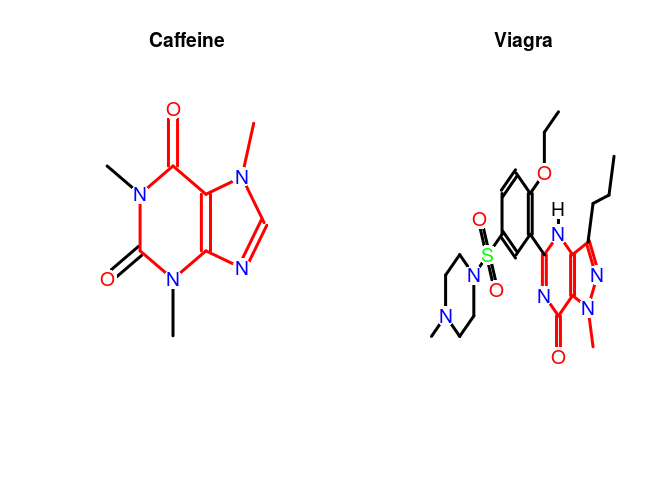
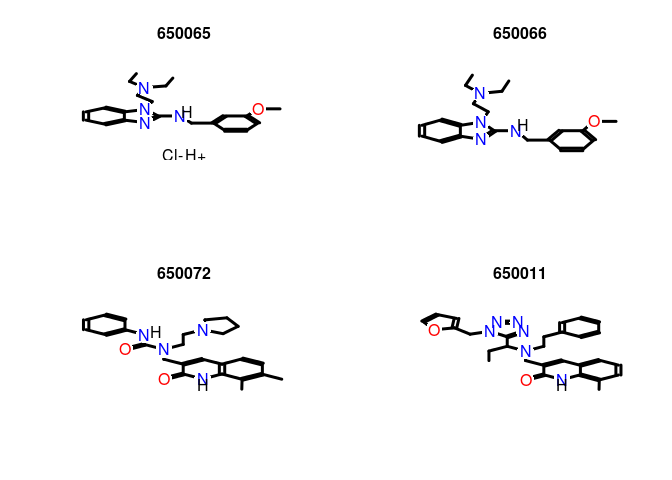

Maximum Common Substructure (MCS) Searching
The ChemmineR add-on package
fmcsR
provides support for identifying maximum common substructures (MCSs) and
flexible MCSs among compounds. The algorithm can be used for pairwise
compound comparisons, structure similarity searching and clustering. The
manual describing this functionality is available
here
and the associated publication is Wang et al. (2013). The following gives a
short preview of some functionalities provided by the
fmcsR package.
library(fmcsR)
data(fmcstest) # Loads test sdfset object
test <- fmcs(fmcstest[1], fmcstest[2], au=2, bu=1) # Searches for MCS with mismatches
plotMCS(test) # Plots both query compounds with MCS in color

AP/APset Classes for Storing Atom Pair Descriptors
The function sdf2ap computes atom pair descriptors for
one or many compounds (Raymond E. Carhart et al., 1985; X. Chen , 2002). It returns a searchable atom pair database
stored in a container of class APset, which can be used
for structural similarity searching and clustering. As similarity
measure, the Tanimoto coefficient or related coefficients can be used.
An APset object consists of one or many
AP entries each storing the atom pairs of a single
compound. Note: the deprecated cmp.parse function is
still available which also generates atom pair descriptor databases, but
directly from an SD file. Since the latter function is less flexible it
may be discontinued in the future.
Generate atom pair descriptor database for searching:
ap <- sdf2ap(sdfset[[1]]) # For single compound
ap
## An instance of "AP"
## <<atom pairs>>
## 52614450304 52615497856 52615514112 52616547456 52616554624 ... length: 528
apset <- sdf2ap(sdfset)
# For many compounds.
view(apset[1:4])
## $`650001`
## An instance of "AP"
## <<atom pairs>>
## 53688190976 53688190977 53688190978 53688190979 53688190980 ... length: 528
##
## $`650002`
## An instance of "AP"
## <<atom pairs>>
## 53688190976 53688190977 53688190978 53688190979 53689239552 ... length: 325
##
## $`650003`
## An instance of "AP"
## <<atom pairs>>
## 52615496704 53688190976 53688190977 53689239552 53697627136 ... length: 325
##
## $`650004`
## An instance of "AP"
## <<atom pairs>>
## 52617593856 52618642432 52619691008 52619691009 52628079616 ... length: 496
Return main components of APset objects:
cid(apset[1:4]) # Compound IDs
ap(apset[1:4]) # Atom pair
descriptors
db.explain(apset[1]) # Return atom pairs in human readable format
Coerce APset to other objects:
apset2descdb(apset) # Returns old list-style AP database
tmp <- as(apset, "list") # Returns list
as(tmp, "APset") # Converts list back to APset
Large SDF and Atom Pair Databases
When working with large data sets it is often desirable to save the
SDFset and APset containers as binary
R objects to files for later use. This way they can be loaded very
quickly into a new R session without recreating them every time from
scratch.
Save and load of SDFset and APset
containers:
save(sdfset, file = "sdfset.rda", compress = TRUE)
load("sdfset.rda") save(apset, file = "apset.rda", compress = TRUE)
load("apset.rda")
Pairwise Compound Comparisons with Atom Pairs
The cmp.similarity function computes the atom pair
similarity between two compounds using the Tanimoto coefficient as
similarity measure. The coefficient is defined as c/(a+b+c), which
is the proportion of the atom pairs shared among two compounds divided
by their union. The variable c is the number of atom pairs common in
both compounds, while a and b are the numbers of their unique
atom pairs.
cmp.similarity(apset[1],
apset[2])
## [1] 0.2637037
cmp.similarity(apset[1], apset[1])
## [1] 1
Similarity Searching with Atom Pairs
The cmp.search function searches an atom pair database
for compounds that are similar to a query compound. The following
example returns a data frame where the rows are sorted by the Tanimoto
similarity score (best to worst). The first column contains the indices
of the matching compounds in the database. The argument cutoff can be a
similarity cutoff, meaning only compounds with a similarity value larger
than this cutoff will be returned; or it can be an integer value
restricting how many compounds will be returned. When supplying a cutoff
of 0, the function will return the similarity values for every compound
in the database.
cmp.search(apset,
apset["650065"], type=3, cutoff = 0.3, quiet=TRUE)
## index cid scores
## 1 61 650066 1.0000000
## 2 60 650065 1.0000000
## 3 67 650072 0.3389831
## 4 11 650011 0.3190608
## 5 15 650015 0.3184524
## 6 86 650092 0.3154270
## 7 64 650069 0.3010279
Alternatively, the
function can return the matches in form of an index or a named vector if
the type argument is set to 1 or
2, respectively.
cmp.search(apset, apset["650065"], type=1, cutoff = 0.3, quiet=TRUE)
## [1] 61 60 67 11 15 86 64
cmp.search(apset, apset["650065"], type=2, cutoff = 0.3, quiet=TRUE)
## 650066 650065 650072 650011 650015 650092 650069
## 1.0000000 1.0000000 0.3389831 0.3190608 0.3184524 0.3154270 0.3010279
FP/FPset Classes for Storing Fingerprints
The FPset class stores fingerprints of small molecules
in a matrix-like representation where every molecule is encoded as a
fingerprint of the same type and length. The FPset
container acts as a searchable database that contains the fingerprints
of many molecules. The FP container holds only one
fingerprint. Several constructor and coerce methods are provided to
populate FP/FPset containers with fingerprints, while
supporting any type and length of fingerprints. For instance, the
function desc2fp generates fingerprints from an atom
pair database stored in an APset, and
as(matrix, "FPset") and as(character, "FPset") construct an FPset database from
objects where the fingerprints are represented as
matrix or character objects,
respectively.
Show slots of FPset class:
showClass("FPset")
## Class "FPset" [package "ChemmineR"]
##
## Slots:
##
## Name: fpma type foldCount
## Class: matrix character numeric
Instance of FPset class:
data(apset)
fpset <- desc2fp(apset)
view(fpset[1:2])
## $`650001`
## An instance of "FP" of type "unknown-4721"
## <<fingerprint>>
## 1 1 1 1 1 1 1 1 1 1 1 1 1 1 1 1 1 1 1 1 ... length: 1024
##
## $`650002`
## An instance of "FP" of type "unknown-4173"
## <<fingerprint>>
## 1 1 1 1 1 1 1 1 1 1 0 1 1 1 1 0 0 0 1 1 ... length: 1024
FPset class usage:
fpset[1:4] # behaves like a list
## An instance of a 1024 bit "FPset" of type "apfp" with 4 molecules
fpset[[1]] # returns FP object
## An instance of "FP" of type "unknown-2986"
## <<fingerprint>>
## 1 1 1 1 1 1 1 1 1 1 1 1 1 1 1 1 1 1 1 1 ... length: 1024
length(fpset) # number of compounds ENDCOMMENT
## [1] 100
cid(fpset) # returns compound ids
## [1] "650001" "650002" "650003" "650004" "650005" "650006" "650007" "650008" "650009" "650010"
## [11] "650011" "650012" "650013" "650014" "650015" "650016" "650017" "650019" "650020" "650021"
## [21] "650022" "650023" "650024" "650025" "650026" "650027" "650028" "650029" "650030" "650031"
## [31] "650032" "650033" "650034" "650035" "650036" "650037" "650038" "650039" "650040" "650041"
## [41] "650042" "650043" "650044" "650045" "650046" "650047" "650048" "650049" "650050" "650052"
## [51] "650054" "650056" "650058" "650059" "650060" "650061" "650062" "650063" "650064" "650065"
## [61] "650066" "650067" "650068" "650069" "650070" "650071" "650072" "650073" "650074" "650075"
## [71] "650076" "650077" "650078" "650079" "650080" "650081" "650082" "650083" "650085" "650086"
## [81] "650087" "650088" "650089" "650090" "650091" "650092" "650093" "650094" "650095" "650096"
## [91] "650097" "650098" "650099" "650100" "650101" "650102" "650103" "650104" "650105" "650106"
fpset[10] <- 0 # replacement of 10th fingerprint to all zeros
cid(fpset) <- 1:length(fpset) # replaces compound ids
c(fpset[1:4], fpset[11:14]) # concatenation of several FPset objects
## An instance of a 1024 bit "FPset" of type "apfp" with 8 molecules
Construct FPset class form matrix:
fpma <- as.matrix(fpset) # coerces FPset to matrix
as(fpma, "FPset")
## An instance of a 1024 bit "FPset" of type "unknown-6312" with 100 molecules
Construct FPset class form character vector:
fpchar <- as.character(fpset) # coerces FPset to character strings
as(fpchar, "FPset") # construction of FPset class from character vector
## An instance of a 1024 bit "FPset" of type "apfp" with 100 molecules
Compound similarity searching with FPset:
fpSim(fpset[1], fpset, method="Tanimoto", cutoff=0.4, top=4)
## 1 96 67 15
## 1.0000000 0.4719101 0.4288499 0.4275229
Folding fingerprints:
fold(fpset) # fold each FP once
## An instance of a 512 bit "FPset" of type "apfp" with 100 molecules
fold(fpset, count=2) #fold each FP twice
## An instance of a 256 bit "FPset" of type "apfp" with 100 molecules
fold(fpset, bits=128) #fold each FP down to 128 bits
## An instance of a 128 bit "FPset" of type "apfp" with 100 molecules
fold(fpset[[1]]) # fold an individual FP
## An instance of "FP" of type "unknown-2996"
## <<fingerprint>>
## 1 1 1 1 1 1 1 1 1 1 1 1 1 1 1 1 1 1 1 1 ... length: 512
fptype(fpset) # get type of FPs
## [1] "apfp"
numBits(fpset) # get the number of bits of each FP
## [1] 1024
foldCount(fold(fpset)) # the number of times an FP or FPset has been folded
## [1] 1
Atom Pair Fingerprints
Atom pairs can be converted into binary atom pair fingerprints of fixed
length. Computations on this compact data structure are more time and
memory efficient than on their relatively complex atom pair
counterparts. The function desc2fp generates
fingerprints from descriptor vectors of variable length such as atom
pairs stored in APset or list
containers. The obtained fingerprints can be used for structure
similarity comparisons, searching and clustering.
Create atom pair sample data set:
data(sdfsample)
sdfset <- sdfsample[1:10]
apset <- sdf2ap(sdfset)
Compute atom pair fingerprint database using internal atom pair
selection containing the 4096 most common atom pairs identified in
DrugBank’s compound collection. For details see ?apfp.
The following example uses from this set the 1024 most frequent atom
pairs:
fpset <- desc2fp(apset, descnames=1024, type="FPset")
Alternatively, one can provide any custom atom pair selection. Here, the
1024 most common ones in apset:
fpset1024 <- names(rev(sort(table(unlist(as(apset, "list")))))[1:1024])
fpset <- desc2fp(apset, descnames=fpset1024, type="FPset")
A more compact way of storing fingerprints is as character values:
fpchar <- desc2fp(x=apset,
descnames=1024, type="character") fpchar <- as.character(fpset)
Converting a fingerprint database to a matrix and vice versa:
fpma <- as.matrix(fpset)
fpset <- as(fpma, "FPset")
Similarity searching and returning Tanimoto similarity coefficients:
fpSim(fpset[1], fpset, method="Tanimoto")
Under method one can choose from several predefined
similarity measures including Tanimoto (default),
Euclidean, Tversky or
Dice. Alternatively, one can pass on custom similarity
functions.
fpSim(fpset[1], fpset, method="Tversky", cutoff=0.4, top=4, alpha=0.5, beta=1)
Example for using a custom similarity function:
myfct <- function(a, b, c, d) c/(a+b+c+d)
fpSim(fpset[1], fpset, method=myfct)
Clustering example:
simMAap <- sapply(cid(apfpset), function(x) fpSim(x=apfpset[x], apfpset, sorted=FALSE))
hc <- hclust(as.dist(1-simMAap), method="single")
plot(as.dendrogram(hc), edgePar=list(col=4, lwd=2), horiz=TRUE)
Fingerprint E-values
The fpSim function can also return Z-scores, E-values, and p-values
if given a set of score distribution parameters. These parameters can
be computed over an fpSet with the genParameters function.
params <- genParameters(fpset)
This function will compute all pairwise distances between the given
fingerprints and then fit a Beta distribution to the resulting
Tanimoto scores, conditioned on the number of set bits in each
fingerprint. For large data sets where you would not want to compute
all pairwise distances, you can set what fraction to sample with the
sampleFraction argument. This step only needs to be done once for
each database of fpSet objects. Alternatively, if you have a large
database of fingerprints, or you believe that the parameters computed
on a single database are more generally applicable, you can use the
resulting parameters for other databases as well.
Once you have a set of parameters, you can pass them to fpSim with
the parameters argument.
fpSim(fpset[[1]], fpset, top=10, parameters=params)
## similarity zscore evalue pvalue
## 1 1.0000000 6.2418215 0.000000 0.0000000
## 96 0.4719101 1.6075792 6.748413 0.9988273
## 67 0.4288499 1.2297052 12.012285 0.9999939
## 15 0.4275229 1.2180604 12.211967 0.9999950
## 88 0.4247423 1.1936587 12.638193 0.9999968
## 64 0.4187380 1.1409688 13.594938 0.9999988
## 4 0.4166667 1.1227914 13.936692 0.9999991
## 86 0.3978686 0.9578290 17.319191 1.0000000
## 77 0.3970588 0.9507232 17.476453 1.0000000
## 69 0.3940000 0.9238806 18.079243 1.0000000
This will then return a data frame with the similarity, Z-score,
E-value, and p-value. You can change which value will be used as a
cutoff and to sort by by setting the argument scoreType to one of
these scores. In this way you could set an E-value cutoff of 0.04 for
example.
fpSim(fpset[[1]], fpset, cutoff=0.04, scoreType="evalue", parameters=params)
## similarity zscore evalue pvalue
## 1 1 6.241822 0 0
Pairwise Compound Comparisons with PubChem Fingerprints
The fpSim function computes the similarity coefficients
(e.g. Tanimoto) for pairwise comparisons of binary fingerprints. For
this data type, c is the number of “on-bits” common in both
compounds, and a and b are the numbers of their unique
“on-bits”. Currently, the PubChem fingerprints need to be provided (here
PubChem’s SD files) and cannot be computed from scratch in
ChemmineR. The PubChem fingerprint specifications can
be loaded with data(pubchemFPencoding).
Convert base 64 encoded PubChem fingerprints to
character vector, matrix or
FPset object:
cid(sdfset) <- sdfid(sdfset)
fpset <- fp2bit(sdfset, type=1)
fpset <- fp2bit(sdfset, type=2)
fpset <- fp2bit(sdfset, type=3)
fpset
## An instance of a 881 bit "FPset" of type "pubchem" with 100 molecules
Pairwise compound structure comparisons:
fpSim(fpset[1], fpset[2])
## 650002
## 0.5364807
Similarity Searching with PubChem Fingerprints
Similarly, the fpSim function provides search
functionality for PubChem fingerprints:
fpSim(fpset["650065"], fpset, method="Tanimoto", cutoff=0.6, top=6)
## 650065 650066 650035 650019 650012 650046
## 1.0000000 0.9944751 0.7435897 0.7432432 0.7230047 0.7142857
Visualize Similarity Search Results
The cmp.search function allows to visualize the
chemical structures for the search results. Similar but more flexible
chemical structure rendering functions are plot and
sdf.visualize described above. By setting the visualize
argument in cmp.search to TRUE, the
matching compounds and their scores can be visualized with a standard
web browser. Depending on the visualize.browse
argument, an URL will be printed or a webpage will be opened showing the
structures of the matching compounds.
View similarity search results in R’s graphics device:
cid(sdfset) <-
cid(apset) # Assure compound name consistency among objects.
plot(sdfset[names(cmp.search(apset, apset["650065"], type=2, cutoff=4, quiet=TRUE))], print=FALSE)

View results online with Chemmine Tools:
similarities <- cmp.search(apset, apset[1], type=3, cutoff = 10)
sdf.visualize(sdfset[similarities[,1]])